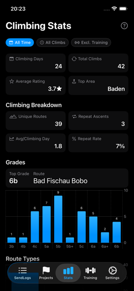
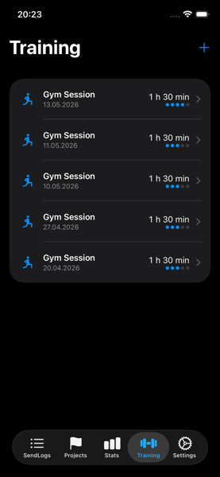
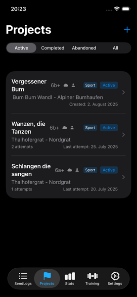
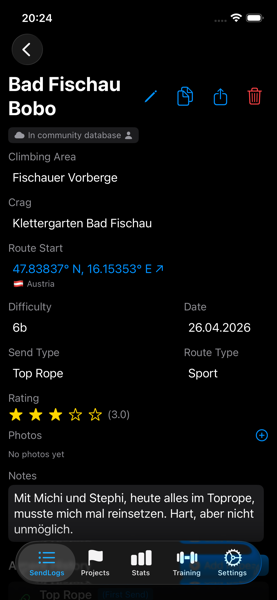
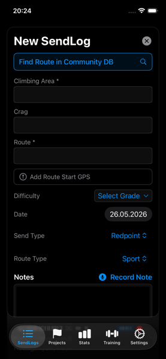
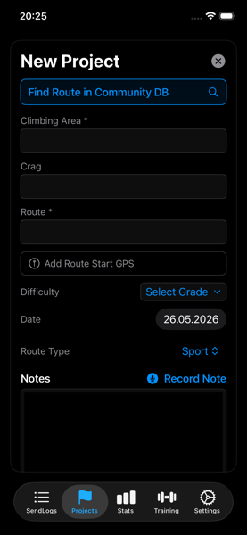

SendLog is an iOS app designed specifically for rock climbers to
easily log, track, and analyze their climbing activities. Quickly
record your achievements, access detailed statistics, and keep
personalized notes for each climb. Free, and offline-first.
Screenshots






App Features
Log Climbing Routes
Route name, area, date, grade, send type, personal rating and notes
— all in one quick form.
Photo Attachments
Attach photos to any climb. Stored locally and synced to the cloud
if enabled.
Training Session Tracking
Log gym and training sessions separately from route logs. Track
duration, type, and consistency over time.
Project Tracking
Track attempts, record high points, and manage active, completed,
and abandoned projects. Converts to a send automatically when you
finish.
Voice Notes
Dictate notes hands-free. Speech recognition in English, German,
French, and Spanish.
Enhanced Sharing
Generate achievement cards with route, grade, and send type for
sharing on social media.
Comprehensive Statistics
Grade distribution, calendar heatmap, unique vs total climbs, and
time-period filtering.
Multi-Pitch & Route Types
Sport, Boulder, and Multi-Pitch — colour-coded, filterable, and
tracked separately.
Multi-Pitch Route Planning
Plan pitches, approach, descent, and gear notes for Multi-Pitch
routes. Tag topo photos for a dedicated full-screen viewer,
navigate to the start with Apple Maps, and time your climb with a
built-in start/finish timer.
Data Import & Export
Export all logs as a CSV/ZIP archive. Import on any device with full
backward compatibility.
☁️ Cloud Sync
Optional cross-device sync via Firebase. Sign in with Apple. Fully
offline by default.
🌐 Web Dashboard
Full logbook access from any browser once Cloud Sync is enabled.
Read-only API keys for dashboards and spreadsheets.
API docs →
🗺️ Central Route Database
Search a shared route database to pre-fill details. See send counts
and community ratings from other climbers.
What's New
Version 3.14 (August 2026)
Multi-Pitch Route Planning: Route Type
"Multi-Pitch" unlocks a dedicated planning section — number of
pitches, approach notes, descent notes, and gear notes —
editable when creating or editing a send or project.
Topo Photos: Tag any photo as a topo (long-press
→ "Mark as Topo"). Tagged photos get a pin badge and open in a
dedicated full-screen, pinch-to-zoom Topo viewer that swipes only
through topo-tagged photos.
Navigate to Start: Multi-Pitch routes with a
saved GPS location show a "Navigate to Start" link that hands off
directly to Apple Maps.
Climb Timer: "Start Climb" / "Finish Climb"
tracks elapsed time as a stopwatch and prefills the duration into
your attempt-log (first ascent) or add-ascent (repeat) form.
Version 3.12 (May 2026)
Training Stats on Stats Page: Sessions, total time,
training days, average per week, and a by-type breakdown chart now
appear as a dedicated section on the Statistics page.
Include Training Toggle: A new filter chip lets you
control whether training session days count toward your Climbing
Days and Weekly Streak. Your preference is remembered.
Stats Filter Chips: Period, Unique Only / All
Climbs, and Incl. / Excl. Training are now a compact horizontal chip
strip instead of stacked buttons — faster to switch and easier to
read at a glance.
Training Session Detail View: Tap any training row
to open a full detail view with Type, Date, Duration, Intensity, and
Notes. Edit or Delete straight from the header — same pattern as
climb details.
Training in Heatmap: Training-only days now appear
in orange on the calendar heatmap. Days with both climbing and
training show in blue.
Version 3.10 (May 2026)
Community Ratings: Routes in the Central Route
Database now show a community star rating — the average of all
individual ratings contributed by climbers who have logged that
route. The rating appears in search results and in the route detail
view, so you can see how the community rates a climb before you get
on it.
Version 3.9 (April 2026)
Goals — Full Feature: Edit and delete goals at any
time. Achieved grade goals are kept permanently as a milestone
history. A confetti animation plays when a goal is first reached.
Grade goals only count actual sends — a route sitting in your
projects does not count.
Goals Cloud Sync: Goals now sync across all your
devices via Cloud Sync.
Partner API Keys: Generate personal read-only API
keys in the Web App (My Account → API Keys) to connect your SendLog
data to custom dashboards and spreadsheets. Full documentation at
sendlog.at/docs/api.
Bug Fixes: Resolved sync issues, training session
edge cases, and statistics calculation inconsistencies.
Version 3.8 (April 2026)
Central Route Database: Search a shared community
route database when logging sends and projects. Routes are
auto-linked with send/project counters updated automatically. Own
your routes with the 👤 ownership indicator.
Route Search Overlay: New 🔍 icon next to the Route
Name field opens an instant search overlay. Select a route to
pre-fill name, crag, area, and grade — or create a new route if it
doesn't exist yet.
Web App CRUD: Full create, read, update, and delete
support for climb notes and projects directly from the browser.
Version 3.7 (April 2026)
Cloud Sync: Optional Firebase-powered backup and
cross-device sync for climbs, ascents, and photos. Sign in with
Apple — app stays fully offline by default
Grade Expansion: French 5b+ and 5c+ added as
intermediate grades; UIAA mappings corrected from 5a onwards to
match international standards
Duplicate Send: New ⧉ button in the send detail
view — opens a pre-filled form with the same area, crag, grade, and
type so logging similar routes is instant
Account Deletion: Delete your cloud account
directly from Settings — local data is preserved and the app
continues in offline mode
Legal & Compliance: Terms of Service and
Privacy Policy acceptance gate before first sign-in; accessible at
any time from Settings
Version 3.6 (March 2026)
Photo Attachments: Attach photos to your climbing
routes to capture beta, document achievements, or remember memorable
climbs
Training Session Tracking: Dedicated training log
to track your gym sessions, training duration, and consistency
Goals: Set personal climbing goals (climbing days
per week/month, target grade by date, training sessions per week)
and track your progress in real time on the Statistics tab
Performance Improvements: General refactoring to
improve app stability and performance across all features
Version 3.0 (May 2025)
Added the possibility to distinguish between Sport, Multi-Pitch and
Boulder routes
Added filtering for climb type with interactive area filters
Revamped statistics page with the possibility to select reporting
time period
Expanded grade ranges for all grade systems to include easier grades
Improved climbing project management with dedicated input flow
Top grade calculation now excludes projects for accuracy
New layout for sharing image with better structure and more info
Added user manual to web site
Bug fixes
Frequently Asked Questions
Yes. You can attach photos directly to each climb from your photo
library or take a new one in the app. Photos are stored on-device
and shown in the climb's detail view. If Cloud Sync is enabled, they
are automatically uploaded and viewable in the Web App at
sendlog.at/app.
Yes. SendLog includes a dedicated Training tab where you can log gym
sessions, hangboard sessions, and other training types, track
duration and intensity, and monitor your training consistency over
time.
By default, all your data is stored locally on your device and never
leaves it. If you choose to enable Cloud Sync, your data is stored
in Firebase (Google Cloud) and protected by Sign in with Apple — no
password is ever created or stored.
Cloud Sync is entirely optional. Turn it on in Settings → Cloud
Sync and sign in with Apple. Your climbs, ascents, and photos are
then backed up and accessible across all your devices. The app
continues to work fully offline at all times — Cloud Sync only runs
when a connection is available.
Yes. Go to Settings → Delete My Account in the app, or to My
Account → Danger Zone in the Web App. All server-side data is
permanently deleted, while your local climbing history on the device
is preserved. The app switches back to offline-only mode
automatically.
Yes. From Settings you can export all your climbs and ascents as a
CSV file inside a ZIP archive. This works whether or not Cloud Sync
is enabled and gives you a portable backup you can open in any
spreadsheet app. You can also export directly from the Web App.
Yes. SendLog has a dedicated Projects tab where you can manage
active, completed, and abandoned projects independently from your
send log. Log individual attempts with notes and high points, and
when you finally send it the project converts to a send
automatically.
No. SendLog works entirely offline — all your climbing logs and
statistics are always available, even at the crag. An internet
connection is only needed if you choose to enable the optional Cloud
Sync feature.
Yes. SendLog fully supports importing data from previous versions,
ensuring continuity and preservation of your climbing history across
updates.
The app automatically calculates your highest grade based on
successfully completed (sent) routes only — projects are excluded.
This gives you a clear and honest view of your climbing progression
over time.
The Central Route Database is a shared community collection of
climbing routes. When logging a send or project, tap the 🔍
icon next to the Route Name field to search for the route. Selecting
it pre-fills the form and links your log to the shared route record
— so you can see how many other SendLog users have sent or projected
the same route, and the community star rating.
Yes. Once Cloud Sync is enabled, you can generate personal read-only
API keys in the Web App under My Account → API Keys. Keys give
third-party tools — dashboards and spreadsheets — scoped access to
your climbs, training, and goals data. Full documentation is at
sendlog.at/docs/api.
Yes. Set a send or project's Route Type to Multi-Pitch to unlock a
dedicated planning section: number of pitches, approach notes,
descent notes, and gear notes. You can also tag photos as topos for
a full-screen topo viewer, hand off to Apple Maps with "Navigate to
Start" using the route's saved GPS location, and time your climb
with a built-in start/finish stopwatch that prefills the ascent
duration when you log the send. See the
User Manual
for a full walkthrough.
About Me
Hi! I'm Robert, the developer behind SendLog. I created this app as a
passionate climber who wanted a simple yet powerful way to track
climbing progress. I'm constantly working to improve the app based on
user feedback and my own climbing experiences.